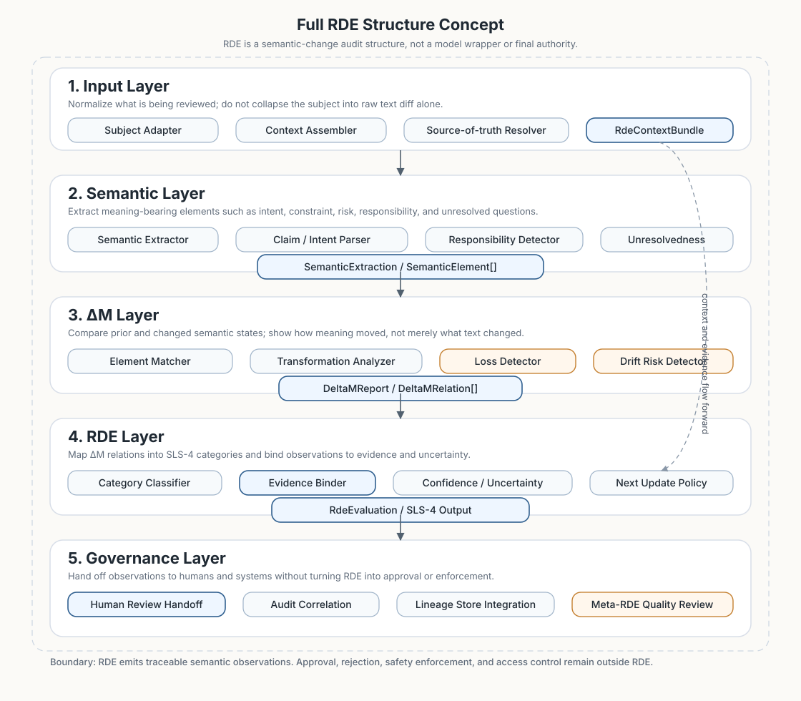

Full RDE Structure Concept
Layered conceptual architecture for evolving RDE from the current SLS-5 scaffold toward semantic extraction, ΔM analysis, evidence binding, lineage/audit integration, and meta-review.

kotonoha-spec SLS-5, the Rust contracts exposed by kotonoha-core, or human review authority.